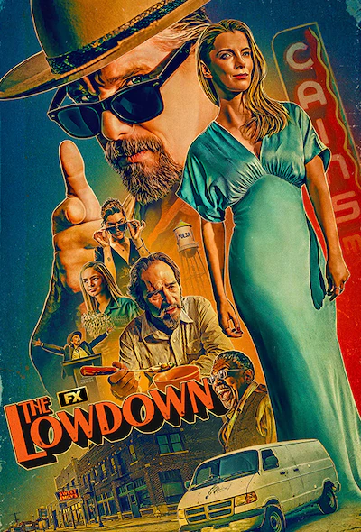

The Lowdown returns for Season 2 on FX, October 14, 2026.
I've been sitting on this one for a while, so it feels good to finally say it out loud: I'll be appearing in the next season of The Lowdown on FX, premiering October 14, 2026.
Notes on Craft · Life on Set · Texas Film, TV, and Theater
September 2026

The Lowdown returns for Season 2 on FX, October 14, 2026.
I've been sitting on this one for a while, so it feels good to finally say it out loud: I'll be appearing in the next season of The Lowdown on FX, premiering October 14, 2026.
August 2026
Next week I start a new class at Breathe Acting Studio, and I could not be more excited about it. Thirty years into this, that isn't something I take for granted. There are a lot of rooms you can walk into as an actor. Very few of them make you actually feel safe.
August 2026
There's a particular quiet that settles over a set between takes — crew resetting marks, the DP checking light, everyone holding a thought mid-air. I've always loved that quiet. It's where a character actually finishes forming, somewhere between "action" and "cut."
June 2026
Before any of the sets or screen credits, there was a community theater in Texas with a leaky roof and a Technical Director who taught me more about storytelling than any classroom did. I think about that stage often.
March 2026
People sometimes ask how I find a character. Honestly, it's rarely one big idea — it's a stack of small, specific choices. A walk. A way of holding a coffee cup. The thing a person does with their hands when they're lying.